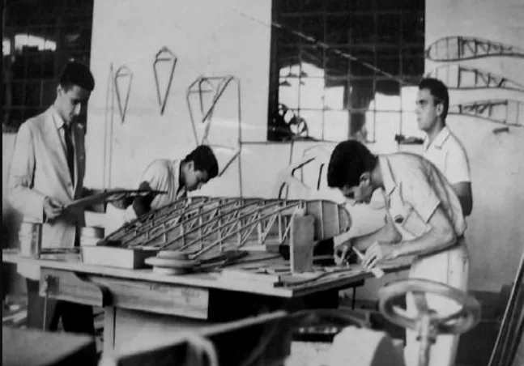
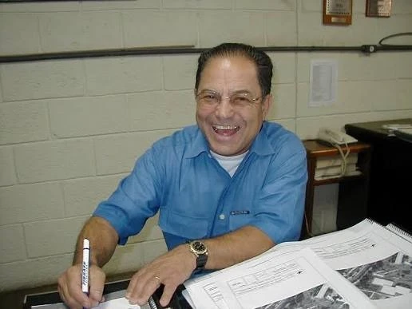
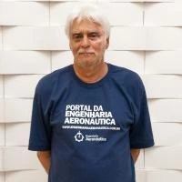
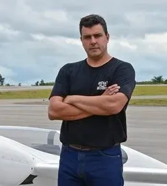

Cláudio Barros: A School of Aircraft Engineering
Cláudio Pinto de Barros established a pedagogical methodology that teaches engineering through the design, fabrication, and flight testing of real aircraft. His life's work at CEA united technical precision with workshop practice, student teamwork, and personal responsibility.
Life, Method & Aircraft Milestones
Origins and the Gaivota Glider
Cláudio Pinto de Barros was born in Curvelo, Minas Gerais, in 1937. While studying mechanical engineering in Belo Horizonte, he pursued aircraft design using Stelio Frati’s classic treatise L’Aliante as a guide for the CB-1 Gaivota glider. In 1963, he founded CEA. In 1964, the wooden Gaivota completed its maiden flight, proving that undergraduate students could calculate, construct, and fly an authentic aeronautical machine.
Developing a Hands-On Design School
Work on the CB-2 Minuano high-performance sailplane began in 1969. Built by master craftsman José de Carvalho e Silva and students, the aircraft pioneered bonded metal-to-metal joints and cellulose acetate honeycomb sandwich structures in Brazil. First flown in December 1975 at Lagoa Santa, Minuano demonstrated a 38:1 glide ratio, solidifying CEA's reputation for advanced structural design.
Vesper, Curumim, and New Materials
During the 1980s, the CB-7 Vesper motor-glider expanded CEA into advanced fiberglass composites and twin-boom configurations, winning an international OSTIV design award in 1990. It was followed by the CB-9 Curumim, developed from 1989 to 1992 and flown in 1993. Curumim became CEA's flying laboratory, instrumented by generations of students to measure flight parameters in real atmosphere.

Codifying Light Aircraft Design
After an academic stay at Universidade da Beira Interior in Portugal, Cláudio returned to UFMG in 1997. In 2001, he completed his doctoral thesis under the supervision of his former student Ricardo Utsch, codifying a comprehensive, validated methodology for light aircraft engineering. This work directly gave rise to the CB-10 Triathlon, which was constructed and flown in 2005.
A Lasting Aeronautical Legacy
Following his formal retirement in 2004, Cláudio continued actively advising CEA students and guiding flight testing as a volunteer professor. In 2008, he witnessed the inauguration of CEA's dedicated flight test hangar at Conselheiro Lafaiete Airport. Cláudio passed away on 2 July 2011, leaving a permanent culture where aircraft development and engineering education are fundamentally inseparable.

Engineering students assembling the wooden wing structure of the Gaivota glider in the foundational CEA workshop (early 1960s).
Learning by Designing, Building and Flying
CEA’s pedagogical approach draws inspiration from Germany’s Akaflieg tradition—academic flying groups where students design, build, and pilot their own experimental aircraft. By integrating conceptual calculation with hardware fabrication and flight testing, students internalize the direct physical consequences of every engineering decision.
Analytical Formulation & Sizing
Translating mission performance goals and flight physics into mathematical formulations, aerodynamic models, and structural load distributions.
Hands-On Hardware Fabrication
Students turn engineering drawings into flight hardware—machining fittings, routing spars, laminating advanced composites, and mastering manufacturing quality.
Experimental Flight Evaluation
Validating aerodynamic predictions through telemetry sensors, instrumentation calibration, and flight-test pilot feedback in real atmospheric conditions.
Historical Continuity & Academic Lineage
The aircraft engineering school established by Cláudio Barros was carried forward through decades of collaboration with key professors and researchers.

Prof. Cláudio Pinto de Barros
Founder & Chief Designer (1963–2004)
Established CEA in 1963, authored the foundational glider designs (CB-1 through CB-10), and created the hands-on engineering pedagogy that has educated generations of aerospace engineers in Brazil.

Prof. Rogério Pinto Ribeiro
Former Student & CEA Faculty
Designed the CEA-104 RPR.1 Jegue self-launching glider as an undergraduate in 1979–1980. Later joined the faculty, contributing to the construction of the CEA-308 and advancing aerospace structural design instruction.

Prof. Paulo Iscold
Historical Chief Designer · Associate Prof. at Cal Poly
Mentored by Cláudio Barros from his undergraduate studies, Paulo conceived the CEA-308 and led the world-record campaigns for both CEA-308 and Anequim. His contributions represent a major chapter in CEA's historical legacy. He is currently an Associate Professor of Aerospace Engineering at California Polytechnic State University (Cal Poly), San Luis Obispo.
Family, Memory & The AeroCB Fly-In
The spirit of CEA is kept alive not only through academic engineering, but through deep human bonds across generations of pilots, alumni, and friends. Maria Cecília Pereira has played an invaluable and continuous role in organizing the annual AeroCB aeronautical fly-in from its inception. Her dedication unites former students, teachers, active researchers, and Cláudio’s family in celebration of the aeronautical passion he inspired.